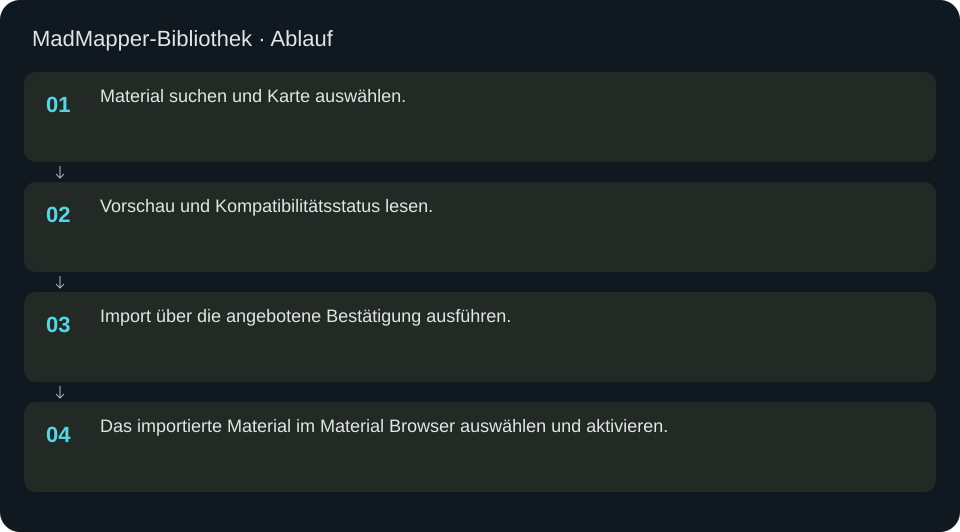
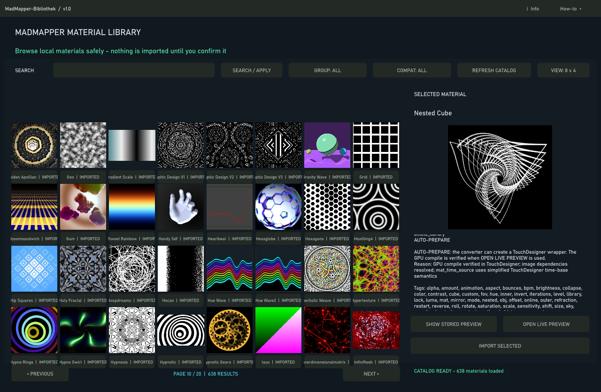

MadMapper-Bibliothek
Katalog durchsuchen, GLSL-Kompatibilität prüfen und Materialien in das Projekt importieren.
In welcher Reihenfolge?
- Material suchen und Karte auswählen.
- Vorschau und Kompatibilitätsstatus lesen.
- Import über die angebotene Bestätigung ausführen.
- Das importierte Material im Material Browser auswählen und aktivieren.


Schritt für Schritt
Prüfen statt raten
Eine Katalogkarte bedeutet noch keinen erfolgreichen GLSL-Import. Unsupported, Compile-Fehler oder fehlende Assets sind Abbrüche. Erst ein erfolgreicher Import mit gültiger Vorschau ist als Material nutzbar. Bei schwarzem Bild auch die Parameter und Quelle prüfen.
Beispiel
Noise suchen, ein unterstütztes Material vorprüfen, Import bestätigen und anschließend im vereinheitlichten Browser unter IMPORTED finden. Dort aktivieren und eine Cue erstellen. Der vollständige Katalog und die Zahl importierter Materialien sind unterschiedliche Zählungen.
Eingaben & Beispiele
| Feld | Bedeutung | Beispiel |
|---|---|---|
search_field | Suche im Materialkatalog. | Noise |
Numerische Eingaben verwenden einen Punkt als Dezimaltrennzeichen. IPs, Pfade, Quellstarts und Universen zuerst mit der tatsächlichen Installation vergleichen.
Woran erkenne ich Erfolg?
Die erwartete Ansicht öffnet, Status und Vorschau entsprechen der gewählten Aktion, und es erscheint kein Fehler. Änderungen beim nächsten Laden beziehungsweise im Live-Status erneut lesen. Ein erfolgreicher Bildschirmtest beweist weder physische LED-Ausgabe noch korrekte Kameramessung.
Quellennachweis
Dateipfade im Projekt-Repository; die Onlinehilfe gibt keinen allgemeinen Dateisystemzugriff frei.
pixelblaze_mapper/build_material_library_browser.pypixelblaze_mapper/build_unified_material_browser.py
Dialog: /project1/madmapper_library/ui_panel